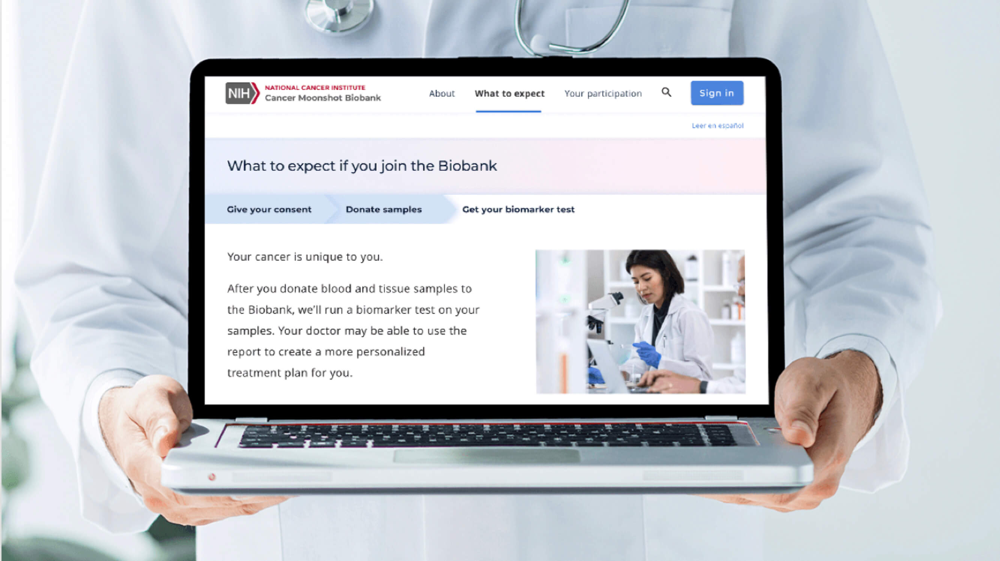

Intranet Homepage
A centralized employee hub for a large, decentralized organization - carving out a niche news-focused experience to differentiate itself from the many competing app portals that exist at lower levels of the organization.
My Roles
- UX design lead
- User researcher

The project: For cancer patients, empower them to retrieve genetic testing results from their tissue samples for a very specific cancer research program. For the cancer research program (Biobank Moonshot), gain the genetic diversity needed to make advancements in cancer research to better serve minority groups that are underrepresented in cancer research.
{kind=link}
As the UX lead, my first challenge was to plan a UX kick-off workshop full of activities substantive enough to inform the go-forward design work. At the same time, I was also staffing the design team that would be working with me through the course of the project – I had some competing higher priority projects during this project’s timeframe, so I would be less hands-on than usual on this one.
I set up a UX workshop, hosting about a dozen client stakeholders. While the workshop was in-person, the lion's share of the project would operate remotely (and with limited availability at that), I knew the in-person workshop was my best shot to baseline some design fundamentals that would inform the entire rest of the project.
I outlined some activities that would get the project team to the bottom of: who the product is for, how should it make them feel, what should it do for them, and fundamentally how might it look.
{kind=link}
AUDIENCE PROFILES
To learn more about who the product would be for, I reserved dedicated workshop time to facilitate an audience profile activity.
{kind=link}
Using a combination of user journey mapping and personas, participants described the goals for each anticipated audience type, their pain points, and opportunities in relation to their journey of enrollment with a medical research program. (thanks to the experience designer I worked with who did the majority of analysis on participant notes).
BRAND PERSONALITY
Given the seriousness of the product (it's cancer research program, remember), I knew that the look and feel were paramount to garnering a positive reception with prospective enrollees. And even more so knowing the research program’s goal of maximizing genetic diversity. I included a workshop activity that guided stakeholders in defining the product’s aesthetic - something that would eventually manifest in the visual style. I was looking to inform the colors, tone, and art direction in a way that would align with the psychological needs of cancer patients.
After I set these goals for the activity, I worked with our visual designer to facilitate a card playing game for workshop participants. Participants chose adjectives on playing cards that they felt best and least represented the emotions they wanted the Portal to convey.
{kind=link}
The teams of stakeholders passionately debated the balance between words like Approachable and Friendly versus Serious and Scientific, thinking through how to straddle the line between establishing professional credibility while not being too off-putting for the general public.
SKETCHING
I wrapped up the day with a sketching activity where our stakeholders had a chance to illustrate their vision for the public facing side of the site.
{kind=link}
While we didn’t directly adapt the casual sketches from this activity for the ultimate design, it gave me a much better understanding of the importance of the public facing informational pages of the site that would be instrumental for recruitment in the general population. For participants, the activity not only gave them a chance to flex their inner design skills, but also reinforced a sense of partnership and being included in design decisions for the rest of the project.
PORTAL NAVIGATION DESIGN
With our range of features for each user defined, and knowing there would only be a handful of critical tasks for each user type, we wanted to give users a correspondingly simple navigation pattern.
{kind=link}
The designer used the Material UI design system to build out the navigation components.
I also wanted something that lended itself to responsive viewports, knowing our audience’s penchant for managing healthcare on the go. With those objectives in mind, I worked with the design team to select a card-based “MetroUI-style” navigation system that was minimalist, touch friendly, and scalable for new features down the road.
FORM DESIGN
With only a small handful of form entry screens with very few data formats, I didn’t want to overengineer the form entry UX. After all, our primary audience – cancer patients – would be best served with an experience that’s familiar and accessible, especially with medical treatments going on at the same time.
{kind=link}
With that guidance in mind, our designer created in-card Edit States directly within the Material UI-based design system. For users, this granted them the convenience going from view/read-only mode directly into edit/create mode without losing the current screen frame of reference (i.e. no navigating away to some unfamiliar edit screen that bears no resemblance to the “view” mode of the same page). In usability testing, the cognitive proximity offered by using in-card form design performed perfectly without any failures or even hesitation when completing edit/update tasks.
INFORMATIONAL PAGES
With the transactional / patient portal aspects of the product complete, we worked with cancer researchers to write informational content pages for the general public and prospective enrollees. For client feedback, we used design comps to convey true-to-life representations and make revisions (executed mostly by the designer; my role on this one was UX guidance).
For user feedback, we took each screen through multiple rounds of usability testing, including 1 on 1 cognitive walkthroughs, and guerilla testing at a senior community center right in my home town. I made sure each designer had a part in planning a portion of the test script specific to their focus area (e.g. for the visual designer to plan questions that would validate mood, tone, and sentiment of photography selection), and for each to have a role in facilitating multiple test sessions.

{kind=link}
{kind=link}
Let's work Together
From Wall Street to Washington, Dan's interaction design and UX lead work spans a range of industries and personas, creating experiences through digital products, websites, and mobile apps.